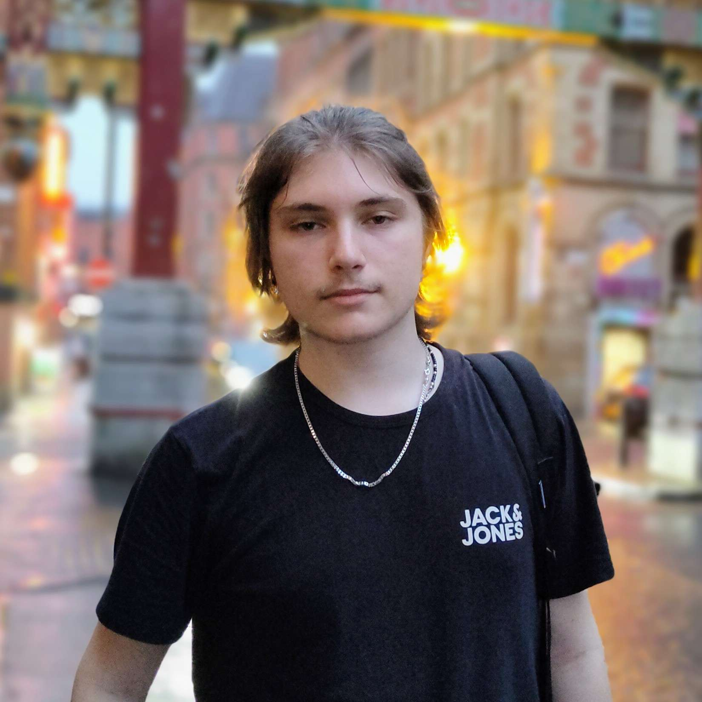
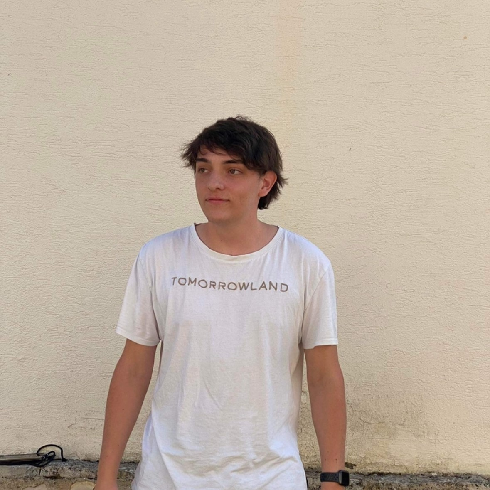
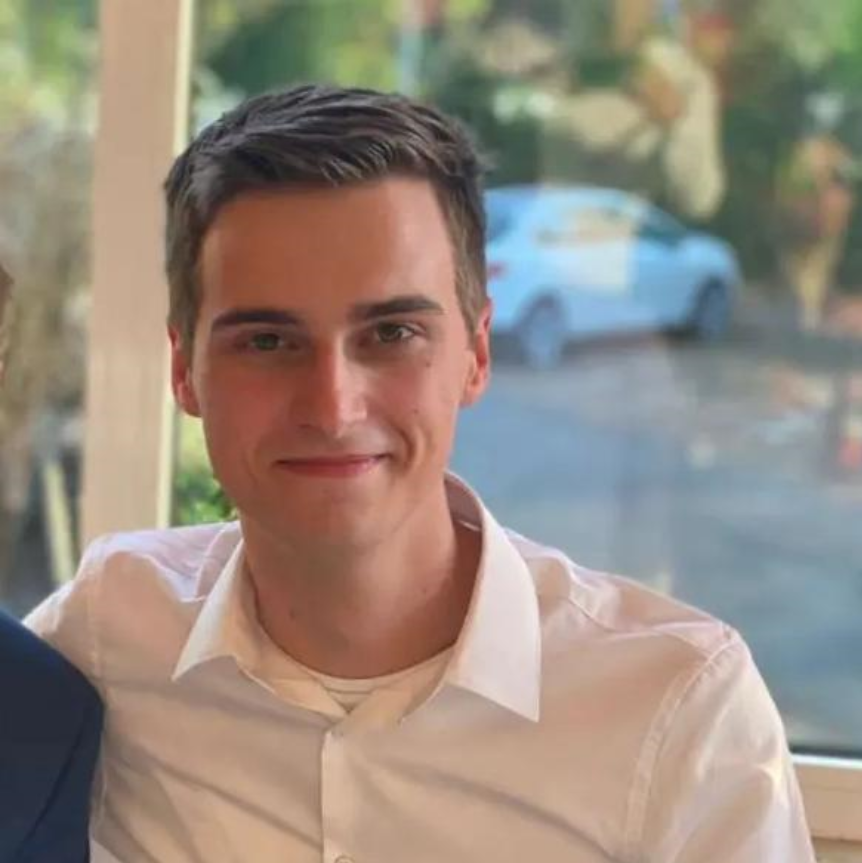

Teoman Akgun
Ik ben een hobbyist fullstack developer. Ik begon met web development in 2017 en heb over de jaren heen veel ervaring opgedaan in belangrijke velden zoals Cyber Security, Artificial Intelligence, Database Management, Web Design, en meer.
Ik hoop mijn kennis te verbreden om ooit een AI/Web Startup te stichten.
Ik hoop mijn kennis te verbreden om ooit een AI/Web Startup te stichten.

Mathias Steegmans
Al van een vrij jonge leeftijd begon ik met het programmeren van Lego Mindstorm-robotjes. Een paar jaar later ontdekte ik Swift, de taal gebruikt om iOS apps te programmeren. Ik studeerde af in de richting Boekhouden-Informatica op het middelbaar, en deed daarna eerst een jaar op de uHasselt voor ik naar PXL kwam.
Marwan Dihane
Ik droomde sinds jongs af aan om een voetballer te worden maar toen de epidimie toesloeg vervaagde die droom. Toevallig een maand voor de wereldwijde quarantine had ik mijn eerste pc gehaald.
Sinds ik niet mocht voetballen had ik meer tijd om achter mijn pc te zitten.
Waardoor ik me meer daarin verdiepte en mijn interesse werdt gecentreerd rond de computer, speciefieker het webscripting. Dus toen ik mijn middelbaar af had gemaakt wist ik onmiddelijk wat ik zou volgen.
Sinds ik niet mocht voetballen had ik meer tijd om achter mijn pc te zitten.
Waardoor ik me meer daarin verdiepte en mijn interesse werdt gecentreerd rond de computer, speciefieker het webscripting. Dus toen ik mijn middelbaar af had gemaakt wist ik onmiddelijk wat ik zou volgen.

Milan Hermans
Hallo, ik ben Milan. Ik heb grote interesse voor netwerken en data-analyse. Ik ben grote voetbal en F1 fan (vooral hoe de enorme hoeveelheden data hier het verschil kunnen maken), met name voor Chelsea FC en RedBull Racing. In mijn vrije tijd speel ik graag videogames, en het interesseerd me enorm hoe ze gemaakt worden.